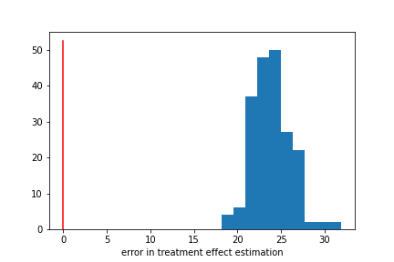
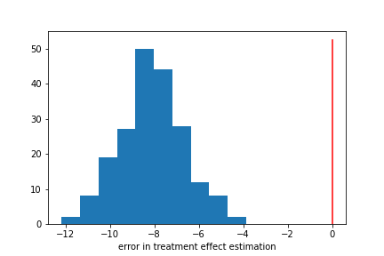

Double/debiased machine learning
Light- to medium-math exaplaination of the method with tutorials, June 10, 2021

What is double machine learning
To me -- and potentially,
its creator -- Double Machine Learning sounds like a trendy name you would give a method to try to sound impressive in developer spaces. Double (or debiased) machine learning is actually a way to esetimate causal effects in large, complex data that have a specific causal structure. Previously many causal
modeling methods relied on assuming a specific form of the data rather than learning it - namely that varialbes were normally distibuted and linearly related to eachother. Additionally, these methods don't allow for complex data, or data where the entropy of the parameter space increases with increasing observations (in otherwords - most large, modern datasets). Combined, these features made causal inference difficult to apply to realworld problems.
Double machine learning (DML) allows causal inference to coexist with complex data with few assumptions, which has drummed up a lot of well deserved excitement about the method (primarily in economics).
When I was trying to learn more about the method, I found that there weren't as many resources out there as I had hoped and that most of the resources that were out there had a very theoretical approach. I wanted to create a resource that explained the theory at a higher level, and had a larger emphasis on code based explainations. This is the info I wish I had when I was learning.
This post focuses on understanding how the DML algorthim works. I hop later to do a post on its application, but for now there are some good tutorial
here.
what clinical problems can DML be used for?
The adoption of this methods aligns nicely with some new trends in clinical informatics (my current field). Clinical machine learning projects have made a major push towards building risk or diagnostic models. Less attention has been devoted to using
learning to suggest treatments or interventions. DML presents one path forward.
I had mentioned previously that DML assumes a particular causal structure in your data, and therefore a particular type of problem. We can illustrate that struvture like this:
Here, Y is some clinical outcome of interest (risk of disease, probability of diagnosis, etc.). T is some treatment or intervention. X is all the
demographic, medical features of the patients. This diagram is illustrating that the treatment will influence the risk of disease, and that features of the
patient will influence both the risk and which/whether treatments will be given. Broadly, the goal is to estimate the size of the arrow connecting T and Y
(referred to now as the treatment effect). Specifically, we want that estimation to:
- be accurate with a lot of data (might seem obvious, but this is harder than it sounds)
- come with confidence intervals
- not make strict assumptions about the form of the data (leverage machine learning)
DML's solution
These points have historically been hard to acheive because methods for 'good' causal estimates typically do not give us point 3, and methods of machine
learning typically do not give us point 1 (and sometimes 2). Machine learning models do not give good causal estimates for 2 reasons:
- Regularization, necessary for fitting complex data, induces a bias (think bias variance trade-ff). To reduce overfitting, analysts using machine learning methods often use
regularization. If you're familiar with LASSO or RIDGE regression, this is a classic example of using regularization. However, this necessarily
increases the bias of estimates.
- Despite our best efforts, machine learning tends to overfit data, further biasing results.
DML can remove those two sources of bias and give us an estimate of the treatment effect and all of the extra points outlined above. At a high level,
these biases are alleviated by fitting two separate machine learning models (thus the name) to estimate the effect of X on Y and T, and then solving for
theta using the residuals of those estimates (more details on this below). Additionally, there are now some pretty good packages implementing DML
in python that play nicely with scikit learn. All together making it a desireable new method for applied scientists, and motivating me to give it a try.
caveats and alternatives
Like all methods, DML comes with important assumptions and caveats.
Assumptions (most of these are true of many causal methods):
- Consistency - An individual's potential outcome under thier observed exposure history is precisely their observed outcome.
- Positivity - Everyone in the study has some probability of receiving treatment
- You are recording all variables that influence Y and T in X. I think this is the most fraught assumption in medical contexts (REF).
Caveats:
- categorical treatment - at the moment, there isn't a way to use DML for a categorical treatment variable that also provides confidence intervals. Other methods, such as doubly robust learning, might be better suited here.
- biased data classes - DML is known to be biased in cases where one outcome is extremely rare (though it is less biased than many other methods). Over/undersampling of the data might be helpful in these cases.
Alternatives
- Doubly robust learning
- TLME
How DML allows causal inference and machine learning to mix
We're now going to describe the method in more detail than the above summary. The goal here is to hit the major points of the DML paper (REF) restructured
for a more applied audience. I found these points difficult to work through on my own (thus the blog post). However if you're satisfied with the above description,
skip to the code example.
direct method
To formalize the problems and solutions discussed above, we're going to have to be more mathematically precise with our definitions. We're going to start by
defining a specific formula for generating data.
$$ {Y = T\theta_{0} + g_{0}(X) + U, E[U | X,T] = 0]} $$
$$ {T = m_{0}(X) + V, E[V | X] = 0} $$
Let's walk through the terms:
- \(X\) the features
- \(Y\) the outcome
- \(T\) the treatment (it can be binary, continuous, or categorical)
- \(g_0(x)\) some mappong of x to y, excluding the effect of T and $\theta_0$
- \(m_0(x)\) some mapping of x to t
- \(\theta\) - the treatment effect. Here its a scalar, for simplicity, but this doesn't have to be the case
- \(U, V\) the noise, which cancels out on average
This equation is essentially formalizing the graph we had displayed earlier.
These equations are a useful example because they give us a specific functional form for how $T$ affects $Y$ ($T \times \theta_0$). Since this relationship is linear,
it makes some of the math a little bit nicer. In the end, we want DML to work for more than just this specific situation, but this definition is useful for now.
If we were to code up these relationships in python, it would look something like this. Note that to code this up we have to pick a specific $g_0(X)$ and $m_0(X)$. It could be whatever you want, but here we're using some exponential sums of the first few columns of X (I picked this because that's what the original paper does).
from scipy.linalg import toeplitz
# pick any value for theta_0
theta = -0.4
# define a function for generating data
def get_data(n, n_x, theta):
"""
partially linear data generating process
Inputs:
n the number of observations to simulate
n_x the number of columns of X to simulate
theta a scalar value for theta
"""
cov_mat = toeplitz([np.power(0.7, k) for k in range(n_x)])
x = np.random.multivariate_normal(np.zeros(n_x), cov_mat, size=[n, ])
u = np.random.standard_normal(size=[n, ])
v = np.random.standard_normal(size=[n, ])
m0 = x[:, 0] + np.divide(np.exp(x[:, 2]), 1 + np.exp(x[:, 2]))
t = m0 + u
g0 = np.divide(np.exp(x[:, 0]), 1 + np.exp(x[:, 0])) + x[:, 2]
y = theta * t + g0 + v
return x, y, t
>
Let's imagine you're given some X, T, and Y data by your emploter, as well as the data generating equations above. You're then asked to estimate what theta is.
One first attempt might be to build one machine learning model of \(T\theta_{0} + g_{0}(X)\) and \(g_0(X)\), then regress out \(T\) to solve for \(\theta_0\).
This is a little tricky because \(g_0(X)\) is not the influence of \(X\) on \(Y\), its the influence of \(X\) on the part of \(Y\) that isnt influenced by \(T \times \theta_0\). Therefore we have to do this iteratively: get an initial guess for \(\theta_0\) in order to estimate \(g_0(X)\); then use that estimate of \(g_0(X)\) to solve for \(\theta_0\).
In code, the direct method would look like this:
First, we'd simulate our data, and build our machine learning estimate of \(Y\) from \(T\theta_{0} + g_{0}(X)\) (we'll call this model \(l_0(X)\))
from sklearn.ensemble import RandomForestRegressor
# get data
x, y, t = get_data(n, n_x, theta)
# this will be our model for predicting Y from X
ml_l = RandomForestRegressor()
ml_l.fit(x,y)
>
Note that you could use whatever machine model you want, it doesn't have to be a random forest. In this example, it should be anything that can estimate exponential functions (since that's the form we picked for our data generating function). Next we can take an initial guess for \(\theta_0\), and then fit our estimate of \(g_0(X)\)
# this will be our model for predicting Y - T*theta from X, or g0_hat
ml_g = RandomForestRegressor()
# initial guess for theta
l_hat = ml_l.predict(x)
psi_a = -np.multiply(t, t)
psi_b = np.multiply(t, y - l_hat)
theta_init = -np.mean(psi_b) / np.mean(psi_a)
# get estimate for g0
ml_g.fit(x, y - t*theta_init)
g_hat = ml_g.predict(x)
>
Lastly, we can regress the effect of T our from our prediction
# compute residuals
u_hat = y - g_hat
psi_a = -np.multiply(t, t)
psi_b = np.multiply(t, u_hat)
# get estimate of theta and and SE
theta_hat = -np.mean(psi_b) / np.mean(psi_a)
psi = psi_a * theta_hat + psi_b
err = theta_hat - theta
J = np.mean(psi_a)
sigma2_hat = 1 / len(y) * np.mean(np.power(psi, 2)) / np.power(J, 2)
err = err/np.sqrt(sigma2_hat)
>
If we repeat this process 200 times, we can genereate a histogram of our error term and see how well we did.

If our estimate is good, we would expect the normalized difference between our estimate of $\theta$ and the real theta to
be centered on 0.
This histogram shows that is not the case. Our estimate is way off and centered on a positive value. What went wrong?
At a high level, part of what went wrong is that we did not explicitly model the effect of X on T. That influence is biasing our estimate.
Illustrating this explicitly is where our partially linear data generating process comes in handy. We can write out an equation for the error in our estimate.
As a reminder, the goal here would be for the left hand side to converge to 0 as we get more data.
regularization bias
\( \sqrt{n}(\hat{\theta_0} - \theta_0) = \)
\((\frac{1}{n}\sum_{i\in I}^nT_{i}^2)^{-1}\frac{1}{\sqrt{n}}\sum_{i \in I}^nT_{i}U_{i}\) \(+\)
\((\frac{1}{n}\sum_{i\in I}^nT_{i}^2)^{-1}\frac{1}{\sqrt{n}}\sum_{i \in I}^nT_{i}(g_0(X_i) - \hat{g_0}(X_i))\)
- The left hand side is our scaled error term - what we want to go to 0
- Noise cancels out on average, so this term is a very small number, divided by a big number. Essentially 0
- This term is where the problem is. Our estimate error is never going to be 0, and won;t quite be cenmtered on 0. This because of the deal we make as
data scientists working with complex data. Reduce the varaince (overfitting) of our machine learning model, we induce some bias in our estimate (often through
regularization). Additionally, T depends on X, and therefore also will not converge to 0. Because of this, g-g_hat times T will be small, but not zero.
It will be divided by a large number, and will converge to 0 eventually, but too slowly to be practical.
We have to remove the effect of X on T to circumvent this bias. We can do this in three steps:
- Estimate \(T\) from \(X\) using ML model of choice (different from the direct method!)
- Estimate \(Y\) from \(X\) using ML model of choice
- Regress the residuals of each model onto eachother to get \(\theta_0\)
We can write out a new error equation like so:
\(\sqrt{n}(\hat{\theta_0} - \theta_0) =\)
\((EV^2)^{-1}\frac{1}{\sqrt{n}}\sum_{i \in I}^nU_iV_i\) \(+)\
\((EV^2)^{-1}\frac{1}{\sqrt{n}}\sum_{i \in I}^n(\hat{m_0}(X_i) - m_0(X_i))(\hat{g_0}(X_i) - g_0(X_i))\) \(+ ... \)
- The left hand side is the same as before
- Noise cancels out on average, so this term is a very small number, divided by a big number. Essentially 0
- Now we have two small, non-0 numbers multiplied by eachother, divided by a large number. This will converge to 0 much more quickly than before
- ... this method adds a new term that we're going to ignore for now. But it comes back later!
In code, this new process only differs in the estimation \(g_0(X)\) amd \(\theta_0\). So fitting \(l_0(X)\) will be the same, but then we have:
# model for predicting T from X - new to the regularized version!
ml_m = RandomForestRegressor()
# model for predicting Y - T|X*theta from X
ml_g = RandomForestRegressor()
ml_m.fit(x,t)
m_hat = ml_m.predict(x)
# this is the part that's different
v_hat = t - m_hat
psi_a = -np.multiply(v_hat, v_hat)
psi_b = np.multiply(v_hat, y - l_hat)
theta_init = -np.mean(psi_b) / np.mean(psi_a)
# get estimate for G
ml_g.fit(x, y - t*theta_init)
g_hat = ml_g.predict(x)
>
Similarly, when we get our finalt estmimate for \(\theta\)
# compute residuals
u_hat = y - g_hat
# v_hat is the residuals from our m0 model
psi_a = -np.multiply(v_hat, v_hat)
psi_b = np.multiply(v_hat, u_hat)
theta_hat = -np.mean(psi_b) / np.mean(psi_a)
psi = psi_a * theta_hat + psi_b
err = theta_hat - theta
J = np.mean(psi_a)
sigma2_hat = 1 / len(y) * np.mean(np.power(psi, 2)) / np.power(J, 2)
err = err/np.sqrt(sigma2_hat)
>
If we plot a similar histogram over 200 simulations we'll get something like this:

And we have greatly reduced (but not eliminated) our bias!
For this specific data generating process, we now have a way of estimating theta without regularization bias! However I mentioned earlier that we want to be
able to estimate more than only this process. In particular, step three involves linear regression, and only works in our partially linear example. How do
we generalize the method of estimating theta?
The least squares solution for linear relationships esentially finds the parameters for a line that minimizes the error between the predicted points on
the line, and the observed data. We can wrote this as the minimization of a cost function of our data and true parameters
$$ \psi(W; \theta, \eta) = 0 $$
This equation looks vary different but contains a lot of the same players as before:
- \(W\) is the data (\(X\),\(Y\), and \(T\))
- \(\theta\) is the true treatment effect
- \(\psi\) is just some cost function. We are purposely not defining it because we want this to be a general solution, but you can think of it as any kind of
error minimization function
- \(\eta\) is called the nuissance parameter, and here contains g and m
Solving minimization problems like these are often difficult and subject to noise. To assure we find a robust solution, we're going to add one other condition
to our equation (called a moment condition)
$$ { \delta_{\eta}E[\psi(W; \theta, \eta][\eta - \eta_0] = 0} $$
Technically, this is a direction al Gateaux derivative. Practically, what this means is that we expect that the true value of theta would be robust to
small purturbations in the nuissance parameters. This has the benefit of giving use estimates that will be stable in the presence of small changes to our
ML models.
There are whole branches of mathematics dedidated to solving these tpyes of equations with moment conditions, and there is no single good solution. All the
different solutions are called 'DML estimators'. Rather than getting into any specific estimator here, we're just going to trust that they exist, and move on.
We'll talk a little bit about a specific estimator in the example code section.
We now have a more generalizable set of steps
- Estimate \(T\) from \(X\)
- Estimate \(Y\) from \(X\)
- Solve moment equation to get \(\theta\)
overfitting bias
We now have a generalizable solution to regulatization bias. Additionally, with the definition of a cost function, we have a method of evaluating our DML
estimator and comparing different models. Specifically, we can find the model that gives smallest value for our moment condition. The specific value of
this function is usually called a 'score' or 'Neyman orthogonality score', and the closer to 0 it is the better. We will use this value to perform model
selection in the example later.
But first, it's time to revisit out error equation in the partially linear case.
$$ { \sqrt{n}(\hat{\theta_0} - \theta_0) = (EV^2)^{-1}\frac{1}{\sqrt{n}}\sum_{i \in I}^nU_iV_i + (EV^2)^{-1}\frac{1}{\sqrt{n}}\sum_{i \in I}^n(\hat{m_0}(X_i) - m_0(X_i))(\hat{g_0}(X_i) - g_0(X_i)) + \frac{1}{\sqrt{n}}\sum_{i \in I}^{n}V_i(\hat{g_0}(X_i) - g_0(X_i)) } $$
We've discussed the first terms perviously, but I'm revealing the last term we had hidden previously.
* If any overfitting is present in \(\hat{g_0}\), the estimate will pick up some noise from the noise term. This will slow down the convergence of this new term to 0
The solution to this bias is to fit \(g\) and \(m\) on a different set of data than the set used to estimate \(\theta\). Similar to how cross-validation avoids overfitting
during parameter selection, this method (called cross-fitting) avoids overfitting in out estimation of \(\theta\). This changes our DML steps slightly.
- Split the data into \(K\) folds. For each fold:
- Estimate \(T\) from \(X\) using ML model of choice and fold \(K\)
- Estimate \(Y\) from \(X\) using ML model of choice and fold \(K\)
- Solve moment equation get \(\theta\) using other sets of data
- Select \(\theta\) estimate that gives the best solution over all splits.
In code, all this does is add a loop over folds:
from sklearn.model_selection import KFold
# number of splits for cross fitting
nSplit = 2
x, y, t = get_data(n, n_x, theta)
# cross fit
kf = KFold(n_splits=nSplit)
# save theta hats, and some variables for getting variance in theta_hat
theta_hats = []
sigmas = []
for train_index, test_index in kf.split(x):
x_train, x_test = x[train_index], x[test_index]
y_train, y_test = y[train_index], y[test_index]
t_train, t_test = t[train_index], t[test_index]
ml_l = RandomForestRegressor()
ml_m = RandomForestRegressor()
ml_g = RandomForestRegressor()
ml_l.fit(x_train,y_train)
ml_m.fit(x_train,t_train)
l_hat = ml_l.predict(x_test)
m_hat = ml_m.predict(x_test)
# initial guess for theta
u_hat = y_test - l_hat
v_hat = t_test - m_hat
psi_a = -np.multiply(v_hat, v_hat)
psi_b = np.multiply(v_hat, u_hat)
theta_init = -np.mean(psi_b) / np.mean(psi_a)
# get estimate for G
ml_g.fit(x_train, y_train - t_train*theta_init)
g_hat = ml_g.predict(x_test)
# compute residuals
u_hat = y_test - g_hat
psi_a = -np.multiply(v_hat, v_hat)
psi_b = np.multiply(v_hat, u_hat)
theta_hat = -np.mean(psi_b) / np.mean(psi_a)
theta_hats.append(theta_hat)
psi = psi_a * theta_hat + psi_b
sigma2_hat = 1 / len(y_test) * np.mean(np.power(psi, 2)) / np.power(J, 2)
sigmas.append(sigma2_hat)
err = np.mean(theta_hat) - theta
err = err/np.sqrt(np.mean(sigmas))
Using this process, we can correct the bias in our estimation

Now we have a pretty good estimate! So far, we've gone over what the DML method is, and how is overcomes biases from regularization and overfitting to get good estimates of $\theta$ without making strong assumptions about the form of the data. We didn't go over here, but it is also possible to calculate confidence intervals for these estimates, which are neccessary for applications to clinical contexts. Now I'll show you how to apply it.
Other resources
- This blog post on DML
- I liked these slides so much I risked the social humilation that comes with liking a twitter post from years ago to show my support
- DoubleML github (see this for code to exactly replicate the figures in the paper)
References
- Rose, S., & Rizopoulos, D. (2020). Machine learning for causal inference in Biostatistics. In Biostatistics (Oxford, England) (Vol. 21, Issue 2, pp. 336–338). NLM (Medline). https://doi.org/10.1093/biostatistics/kxz045
- Chernozhukov, V., Chetverikov, D., Demirer, M., Duflo, E., Hansen, C., Newey, W., & Robins, J. (2016). Double/Debiased Machine Learning for Treatment and Causal Parameters. http://arxiv.org/abs/1608.00060